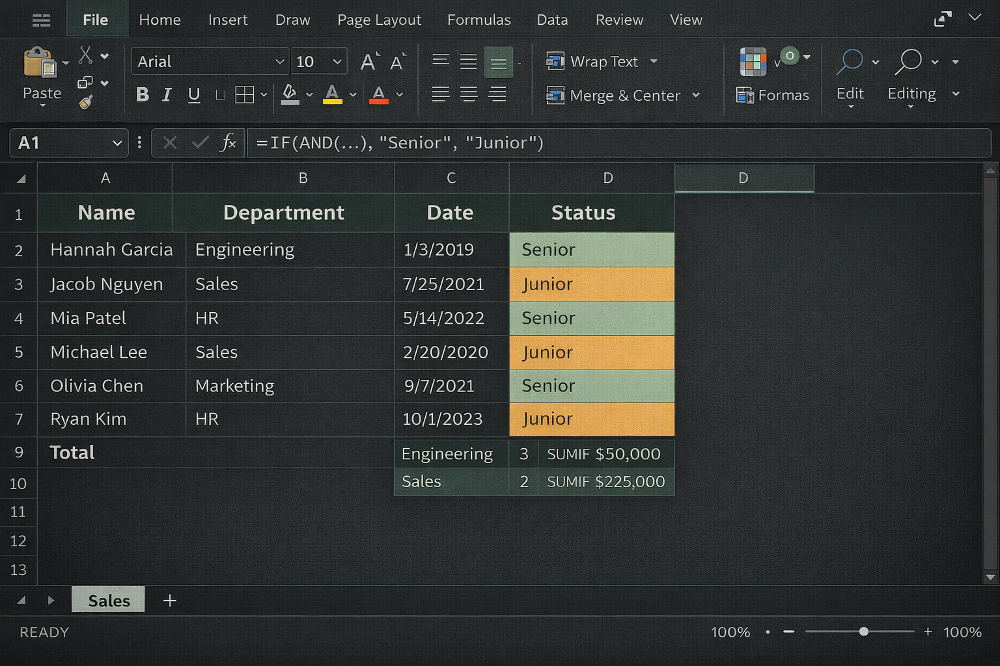
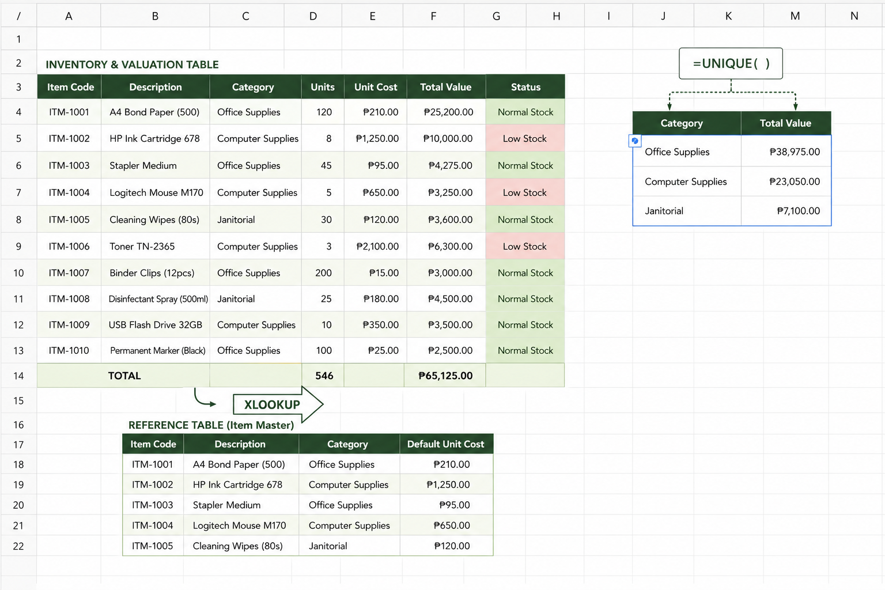

Microsoft Excel Essentials
Instructor-led courses for building core Excel skills from the ground up.

Getting Started with Microsoft Excel
Navigate the Excel interface and build your first structured workbook by learning essential formulas, formatting, table organization, and basic chart and protection features — all applied to a single progressive artifact.

Working with Data in Excel
Transform a raw employee records dataset into a clean, classified, and summarized workbook by applying text extraction, date calculations, logical classification with conditional formatting, and formula-driven aggregation — all on a single progressive artifact.

Data Tables and Management in Excel
Build a structured data workbook for tracking and managing operational records by organizing data as a named Table, calculating dates and deadlines, applying intermediate formulas with cross-sheet lookups, enforcing data validation rules, flagging exceptions with reconciliation formulas, and cleaning imported data with Excel's management tools.

Excel for Accounting and Inventory Reporting
Build a complete, formula-driven accounting and inventory workbook by importing live data, extending it with calculated columns and formulas, cross-referencing records using XLOOKUP and data validation, summarizing results on a dedicated summary sheet with a chart, and validating the completed workbook before distribution.